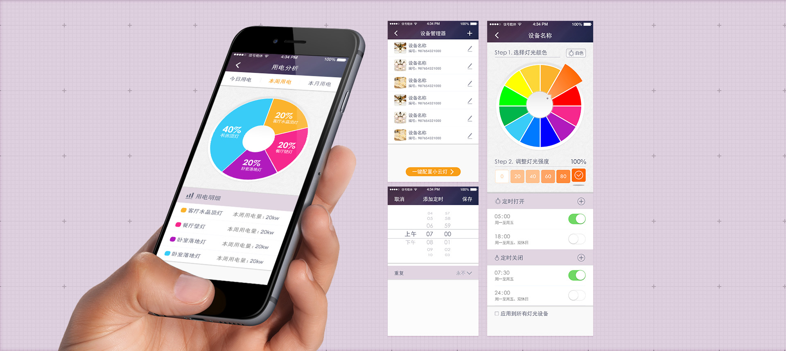
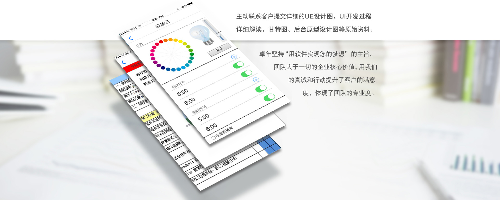

在智能家居方面，声物科技在此前还未涉及过智能灯具领域，
此次与我公司的合作研发是一次全新的尝试。
Traditional 传统灯具
- 操控单一：
- 传统灯具都由室内开关操作，只能在特定的地方开启或关闭灯具；；
- 可控性低：
- 用户一旦远离室内，很难了解当前灯具使用情况；
- 交互性差：
- 除了操作开关之外，用户与灯具的交互基本为0；
- 功能简陋：
- 无法调整灯具属性，不能适应现代人多样化的需求。
Advantage 云灯的优势
- 远程操控：
- 我们为灯具添加了无线模块，将灯具与互联网相连，实现了灯具的远程操作；
- 可控性高：
- 身在异地也能随时了解灯具使用情况，给客户最安心的体验；
- 交互性强：
- 用户可根据自己的喜好设定灯具的颜色强度及开关时间。
- 使用范围大：
- 云灯本身包含路由器，对于大户型住宅可扩展WIFI使用范围，保证有效范围。

卓年采用标准化服务体系

即唯一对接人全程跟进，简化需求确认及修改流程，提高项目研发效率。

从项目伊始，项目负责人全程跟进五项管理公司日常业务，深入客户公司与团队一起参加晨夕会；与客户公司销售总监、IT总监、财务总监深入沟通十数次，约谈数十名员工，详细了解原来使手工填表过程以及不方便处，深挖客户需求，想客户所想，行动在客户需求之前，为UE设计提供了第一手详细准确资料。

项目执行期间，精益求精，设计修改十数次挑选最完美终稿。
